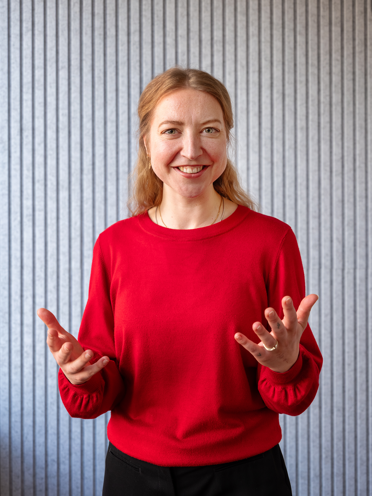

Operative Prozessoptimierung
Prozesse aufnehmen, Engpässe und Ursachen identifizieren, Schnittstellen klären und praktikable Verbesserungen entwickeln.
Ich unterstütze Hotels, Retreats und Hospitality-Unternehmen dabei, operative Abläufe zu durchdringen, Reibungsverluste zu reduzieren und Veränderungen nachhaltig im Team zu verankern. Mein Fundament: über 15 Jahre operative Hotellerie. Mein nächster Hebel: datenbasierte Prozessoptimierung.
Projekt besprechenLinkedIn ↗Foto: Nike Gais

Mein Vater war Küchenchef. Als ich 13 war, gab er mir einen Gedanken mit: Wer viele unterschiedliche Betriebe kennenlernt, versteht das Geschäft aus mehr Perspektiven. Ich habe mir diesen Rat zu Herzen genommen – von internationalen Hotelketten über Kreuzfahrtschiffe bis zu einem persönlich geführten Retreat Center in Schweden. Was mich dabei zunehmend faszinierte, war nicht allein der Hotelalltag. Es war die Frage, warum Probleme entstehen und wie sich Abläufe so gestalten lassen, dass sie gar nicht erst auftreten.
Ein Prozess ist für mich erst dann gut, wenn er im echten Betrieb funktioniert – für Gäste, Mitarbeitende und Führungskräfte. Ich höre zu, beobachte Schnittstellen, hinterfrage Gewohnheiten und bringe unterschiedliche Perspektiven an einen Tisch.
Wo verlieren Teams Zeit, Informationen oder Qualität? Ich untersuche den Ablauf statt nur das einzelne Problem.
Aus Erkenntnissen werden klare Verantwortlichkeiten, einfachere Workflows und Lösungen, die zum Betrieb passen.
Ich kann Teams trainieren, Menschen begeistern und Veränderung so vermitteln, dass sie im Alltag ankommt.
Ich kenne operative Prozesse aus eigener Verantwortung: Front Office, Reservierung, Housekeeping-Koordination, Events, Guest Experience und bereichsübergreifende Führung. Als geprüfte Hotelmeisterin (IHK) habe ich sowohl internationale Standards als auch die besonderen Anforderungen individueller Häuser erlebt. In Schweden habe ich unter anderem Arbeitsabläufe strukturiert, Feedbackinstrumente entwickelt und Anforderungen für die Auswahl einer Hotelsoftware analysiert.
Durch meine Weiterbildung in Data Analytics & AI an der WBS Coding School erweitere ich meine operative Perspektive um Python, SQL, Datenanalyse und Visualisierung. Ich lerne, Prozessfragen mit Daten zu untersuchen, Muster sichtbar zu machen und Verbesserungen nachvollziehbar zu messen. Diese Kompetenzen baue ich aktuell aus – als Ergänzung zu meiner langjährigen Hospitality-Erfahrung, nicht als Ersatz dafür.
Ich bin offen für ausgewählte, anspruchsvolle Projektmandate mit klarer Aufgabenstellung, eigenständigem Gestaltungsspielraum und konkretem Nutzen. Je nach Herausforderung kombiniere ich Prozessanalyse, Teamarbeit, Guest Experience und Technologie.
Prozesse aufnehmen, Engpässe und Ursachen identifizieren, Schnittstellen klären und praktikable Verbesserungen entwickeln.
Teams einbinden, Trainings gestalten und neue Abläufe so vermitteln, dass aus einer guten Idee gelebte Praxis wird.
Die Gäste- und Mitarbeitendenperspektive verbinden, Servicebrüche erkennen und Qualität durch bessere Abläufe stärken.
Anforderungen aus dem Betrieb übersetzen, Softwareeinführungen anwendernah begleiten und Daten für Prozessentscheidungen nutzen.
Für Boutique-Hotels, Retreats, individuell geführte Häuser und Hospitality-Tech-Unternehmen. Umfang und Honorar werden projektspezifisch vereinbart.
Ich liebe besondere Orte, neue Perspektiven und Menschen, die mit Begeisterung etwas gestalten. Trainings und Teamarbeit geben mir Energie: Ich kann komplexe Inhalte verständlich vermitteln, Menschen zusammenbringen und für ein gemeinsames Ziel gewinnen. Diese Haltung prägt auch mein Engagement als Gründerin und Vorsitzende von JugendERA e. V.

Ich freue mich auf Projekte, bei denen ich mit meiner Erfahrung und meinem Blick für Zusammenhänge einen konkreten Unterschied machen kann. Beschreiben Sie mir Ihre Herausforderung – dann finden wir heraus, ob wir zusammenpassen.
Projekt anfragen LinkedIn ↗